রেচন প্রক্রিয়া — সম্পূর্ণ মূল স্ক্যান
NCTB ২০২৬ শিক্ষাবর্ষের নবম-দশম শ্রেণির জীববিজ্ঞান বইয়ের অষ্টম অধ্যায়ের ১২টি পৃষ্ঠা (পৃষ্ঠা ১৭৮–১৮৯), মূল পাঠ্যবই ক্রমে।
এই অধ্যায়টি মানবদেহের রেচন প্রক্রিয়া, নাইট্রোজেনঘটিত বর্জ্য নিষ্কাশন, বৃক্ক ও নেফ্রনের গঠন, মূত্র উৎপাদন ও অসমোরেগুলেশন, বৃক্কের রোগ (পাথর ও বিকলতা), ডায়ালাইসিস এবং কিডনি প্রতিস্থাপনের ওপর রচিত। প্রতিটি পৃষ্ঠা উচ্চ রেজোলিউশনের স্ক্যান হিসেবে সংরক্ষিত যাতে পাঠ্যবইয়ের মূল রেখাচিত্র, চিহ্নিত চিত্র ও বিবরণ সরাসরি মিলিয়ে নেওয়া যায়। অধ্যায়ের বিষয়সূচিতে ফিরো।
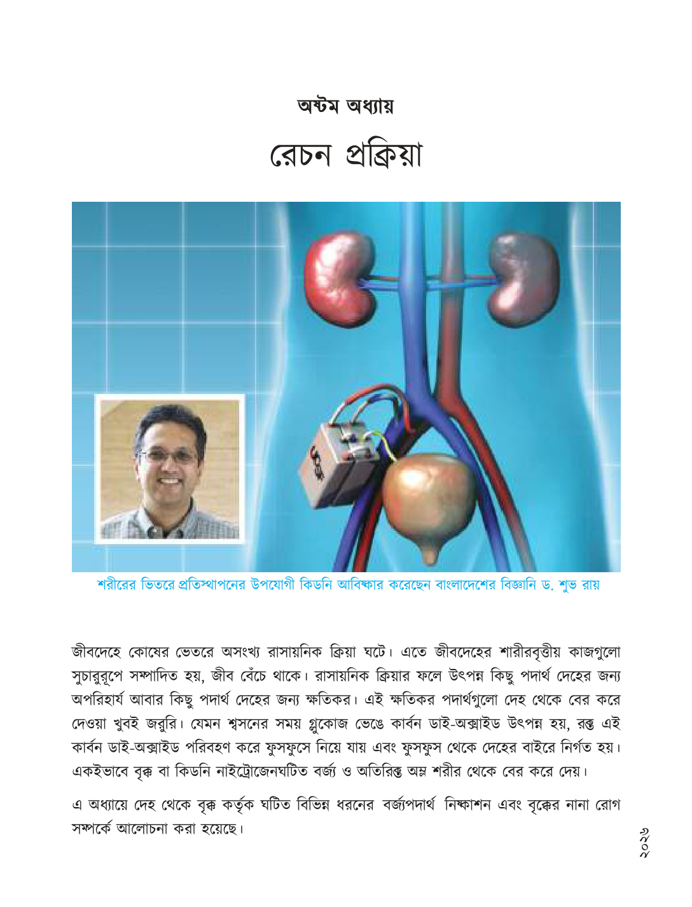
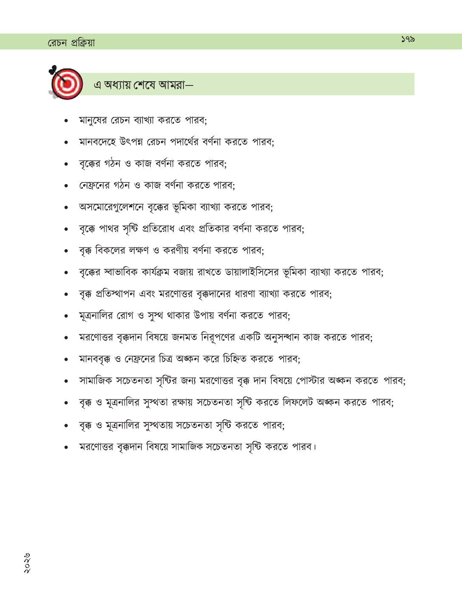
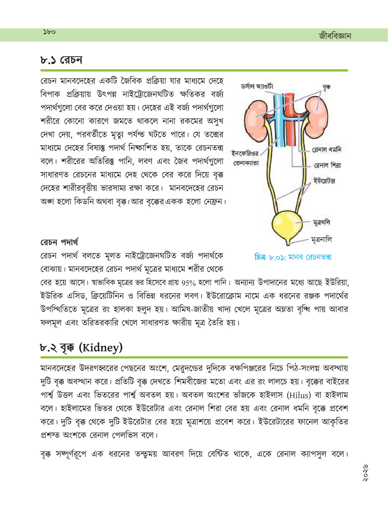
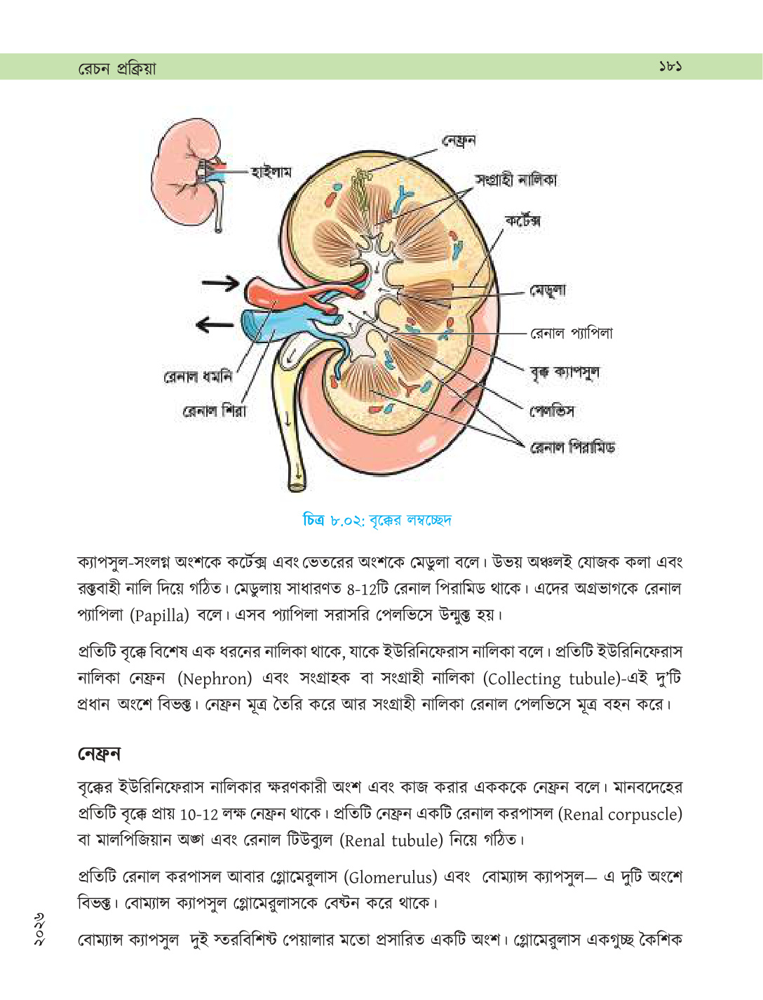
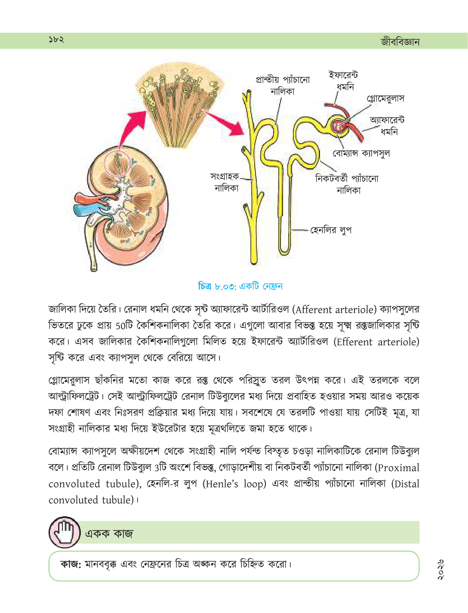
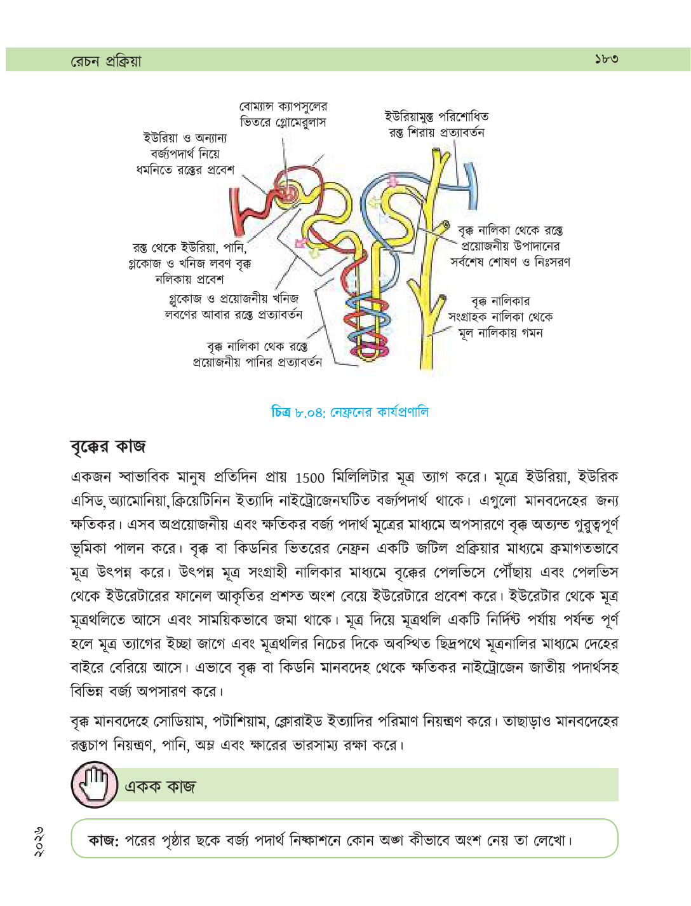
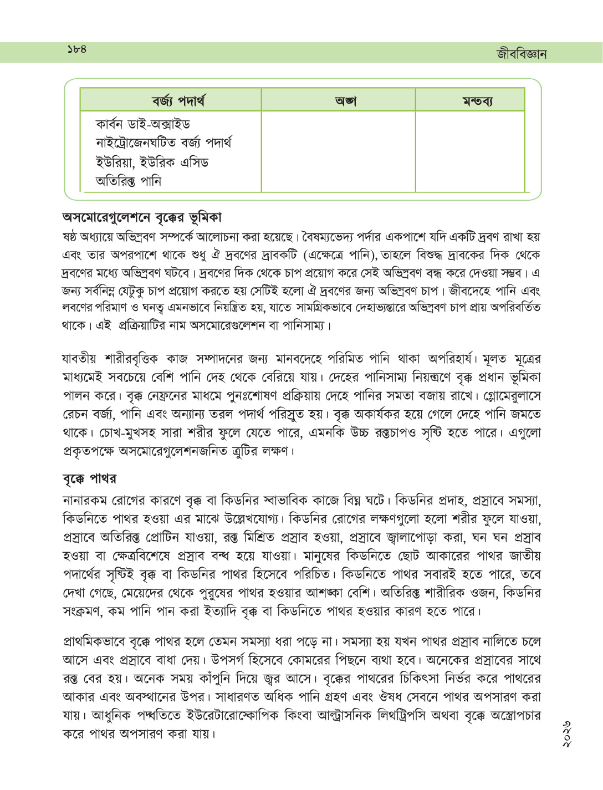
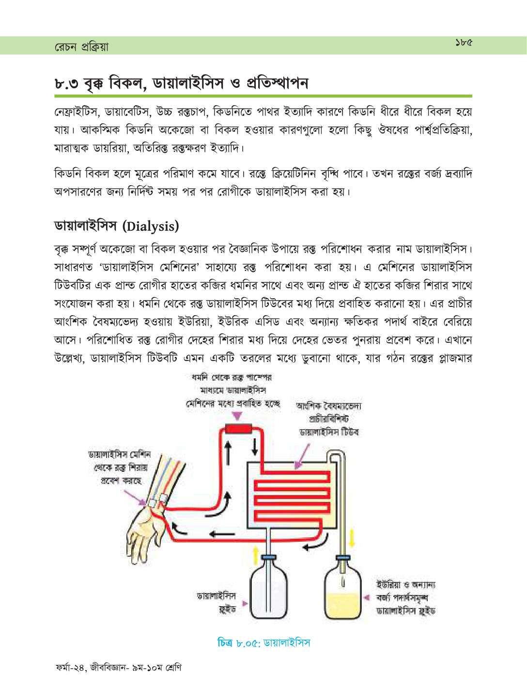
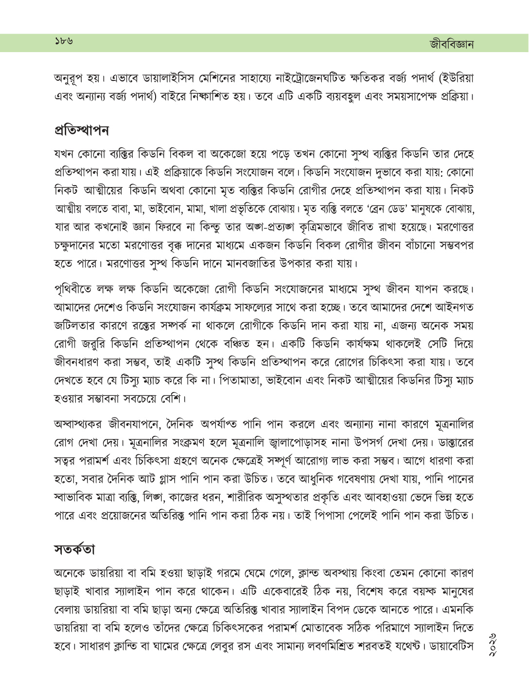
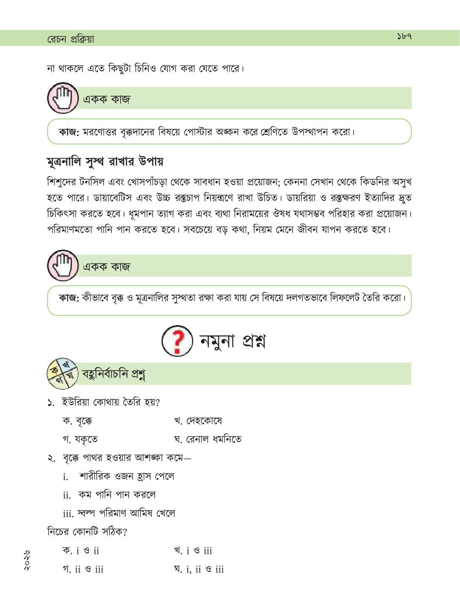
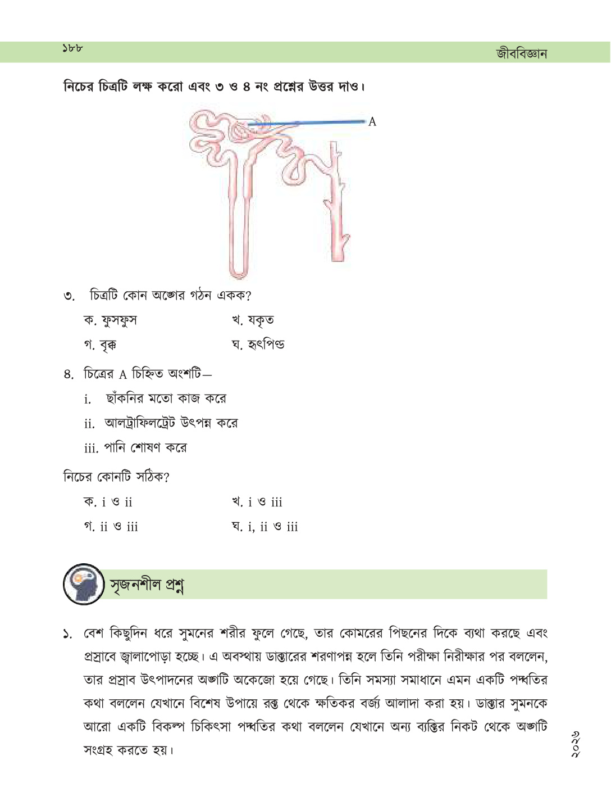
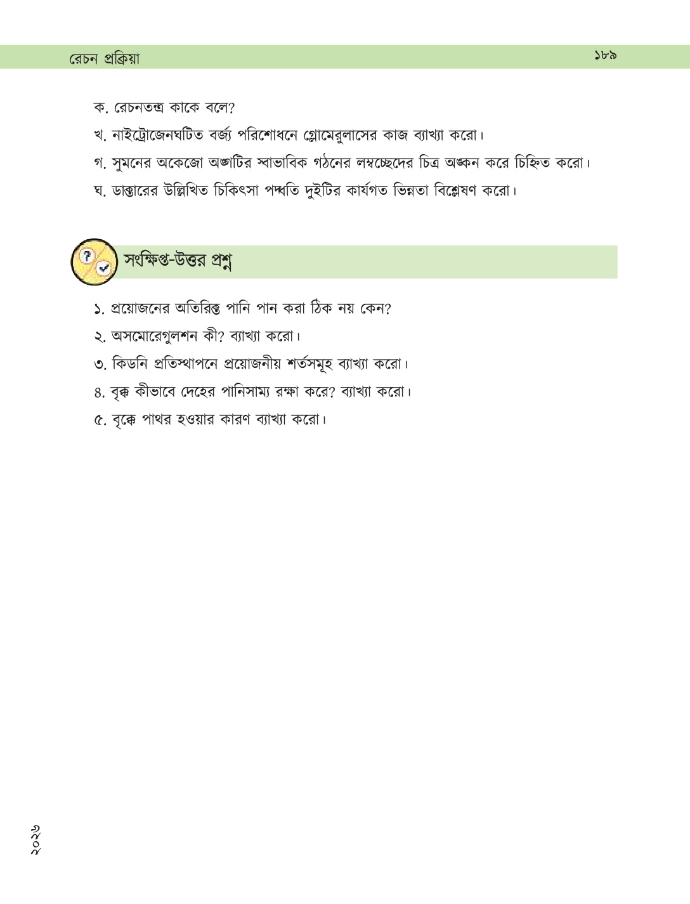